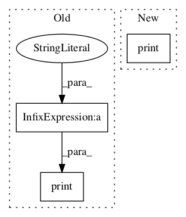

058443c5aa4dcd59675b9a7dcec6ecfbaf2e81a4,tensorflow_model.py,Code2VecModel,train,#Code2VecModel#,72

Before Change
print("Saved after %d epochs in: %s" % (epoch_num, save_target))
results, precision, recall, f1 = self.evaluate()
print("Accuracy after %d epochs: %s" % (epoch_num, results[:5]))
print("After " + str(epoch_num) + " epochs: Precision: " + str(precision) + ", recall: " + str(
recall) + ", F1: " + str(f1))
except tf.errors.OutOfRangeError:
pass // The reader iterator is exhausted and have no more batches to produce.
print("Done training")
After Change
evaluation_results = self.evaluate()
evaluation_results_str = (str(evaluation_results).replace("topk", "top{}".format(
self.config.TOP_K_WORDS_CONSIDERED_DURING_PREDICTION)))
print("After {nr_epochs} epochs -- {evaluation_results}".format(
nr_epochs=epoch_num,
evaluation_results=evaluation_results_str
))
except tf.errors.OutOfRangeError:
pass // The reader iterator is exhausted and have no more batches to produce.
print("Done training")
In pattern: SUPERPATTERN
Frequency: 5
Non-data size: 3
Instances
Project Name: tech-srl/code2vec
Commit Name: 058443c5aa4dcd59675b9a7dcec6ecfbaf2e81a4
Time:
Author: null
File Name: tensorflow_model.py
Class Name: Code2VecModel
Method Name: train
Project Name: shibing624/pycorrector
Commit Name: 5c58bbd49d94b38a7b70a836ae91f537f7dded7b
Time:
Author: null
File Name: pycorrector/seq2seq_attention/infer.py
Class Name:
Method Name:
Project Name: astorfi/TensorFlow-World
Commit Name: 76a779010932581c6407810305271d98f0ef25ea
Time:
Author: null
File Name: codes/3-neural_networks/multi-layer-perceptron/code/train_mlp.py
Class Name:
Method Name:
Project Name: geometalab/OSMDeepOD
Commit Name: 5498cb8bd7e7f3bb10ffe7d2c7ce3b0753df71e2
Time:
Author: null
File Name: src/train/retrain.py
Class Name:
Method Name: get_or_create_bottleneck
Project Name: brilee/MuGo
Commit Name: 8ca84b812a0e555d06da4b616b5c2d0e90c7efb4
Time:
Author: null
File Name: main.py
Class Name:
Method Name: preprocess